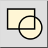

Dit is een automatische vertaling.
Werkbalk / icoon:

Menu: Blok > Blok invoegen
Sneltoets: B, I
Opdrachten: blockinsert | minsert | insert | bi
Met dit functie wordt de actieve blok in de tekening ingevoegd. Op de tekening worden één of meerdere blokreferenties gemaakt om de actieve blok weer te geven.